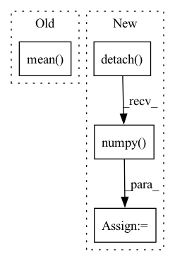

Pattern ID :6110

Before Change
// if do_Dmain:
// loss4 += loss3
// loss4.backward() // 咩酱：gain即上文提到的这个阶段的训练间隔。
(real_logits * 0 + loss_Dreal + loss_Dr1).mean().mul(gain).backward()
return loss_numpy
def train_iter(self, optimizers=None):
After Change
// ddd = np.mean((dic2[phase + "r1_penalty"] - r1_penalty.cpu().detach().numpy()) ** 2)
// print("ddd=%.6f" % ddd)
loss_Dr1 = r1_penalty * (self.r1_gamma / 2)
loss_numpy["loss_Dr1"] = loss_Dr1.cpu().detach().numpy().mean()
loss4 = (loss_Dreal + loss_Dr1).mean() * float(gain)
// if do_Dmain:
In pattern: SUPERPATTERN
Frequency: 4
Non-data size: 4
Instances
Fragment ID: 21128274
Project Name: miemie2013/miemiegan
Commit Name: fbc8738996ce75111be885ba7ac313d85969a2b8
Time: 2022-02-25
Author: 53960695+miemie2013@users.noreply.github.com
File Name: mmgan/models/architectures/styleganv2ada_model.py
M Class Name: StyleGANv2ADAModel
N Class Name: StyleGANv2ADAModel
M Method Name: accumulate_gradients(8)
N Method Name: accumulate_gradients(8)
M Parent Class: torch.nn.Module
N Parent Class: torch.nn.Module
M File Name: mmgan/models/architectures/styleganv2ada_model.py
N File Name: mmgan/models/architectures/styleganv2ada_model.py
M Start Line: 138
M End Line: 260
N Start Line: 143
N End Line: 262
'>
Before Change
loss.backward()
optimizer.step()
target_hr_list.append(data["target"].item())
predicted_list.append(outputs[2].mean().item())
fin_loss += loss.item()
return target_hr_list, predicted_list, fin_loss / len(data_loader)
After Change
target_hr_batch = list(data["target"].mean(dim=1, keepdim=True).squeeze(1).detach().numpy())
target_hr_list.extend(target_hr_batch)
predicted_hr_batch = list(outputs.squeeze(2).mean(dim=1, keepdim=True).squeeze(1).detach().numpy())
predicted_hr_list.extend(predicted_hr_batch)
fin_loss += loss.item()
'>
Fragment ID: 21128275
Project Name: anweshcr7/rhythmnet
Commit Name: 465030f9efb5f86a94572239a5147c1c667f24fd
Time: 2021-02-23
Author: anwesh.marwade@beyondsports.nl
File Name: src/engine.py
M Class Name: AnonimousClass
N Class Name: AnonimousClass
M Method Name: train_fn(4)
N Method Name: train_fn(4)
M Parent Class:
N Parent Class:
M File Name: src/engine.py
N File Name: src/engine.py
M Start Line: 12
M End Line: 28
N Start Line: 12
N End Line: 33
'>
Before Change
// loss = loss_fn(out, data["target"])
// _, batch_preds = torch.max(out.data, 1)
// fin_loss += loss.item()
predicted_list.append(out.mean().item())
target_hr_list.append(data["target"].item())
return target_hr_list, predicted_list
After Change
target_hr_batch = list(data["target"].mean(dim=1, keepdim=True).squeeze(1).detach().numpy())
target_hr_list.extend(target_hr_batch)
predicted_hr_batch = list(outputs.squeeze(2).mean(dim=1, keepdim=True).squeeze(1).detach().numpy())
predicted_list.extend(predicted_hr_batch)
'>
Fragment ID: 21128278
Project Name: anweshcr7/rhythmnet
Commit Name: 465030f9efb5f86a94572239a5147c1c667f24fd
Time: 2021-02-23
Author: anwesh.marwade@beyondsports.nl
File Name: src/engine.py
M Class Name: AnonimousClass
N Class Name: AnonimousClass
M Method Name: eval_fn(3)
N Method Name: eval_fn(3)
M Parent Class:
N Parent Class:
M File Name: src/engine.py
N File Name: src/engine.py
M Start Line: 37
M End Line: 51
N Start Line: 41
N End Line: 63
'>
Before Change
value_loss_buffer = []
for _ in range(self.value_update_iter):
value = self.value_net.forward(obs)
value_loss = (ret - value).pow(2).mean()
value_loss_buffer.append(value_loss.item())
self.value_optimizer.zero_grad()
value_loss.backward()
self.value_optimizer.step()
After Change
for _ in range(self.value_update_iter):
td_target = rew + self.gamma * self.value_net.forward(next_obs) * (1 - don)
delta = td_target - self.value_net.forward(obs)
delta = delta.detach().numpy()
advantage_lst = []
advantage = 0.0
for delta_t in delta[::-1]:
advantage = self.gamma * self.lam * advantage + delta_t[0]
advantage_lst.append([advantage])
advantage_lst.reverse()
advantage = torch.FloatTensor(advantage_lst)
value = self.value_net.forward(obs)
//value_loss = (ret - value).pow(2).mean()
value_loss = F.smooth_l1_loss(td_target.detach(), value)
value_loss_buffer.append(value_loss.item())
self.value_optimizer.zero_grad()
value_loss.backward()
self.value_optimizer.step()
if self.log:
self.writer.add_scalar("value_loss", np.mean(value_loss_buffer), self.train_count)
probs = self.policy_net.forward(obs)
probs = probs.gather(1, act).squeeze(1)
ratio = probs / old_probs
surr1 = ratio * advantage
surr2 = torch.clamp(ratio, 1. - self.epsilon, 1. + self.epsilon) * advantage
policy_loss = - torch.min(surr1, surr2).mean()
policy_loss_buffer.append(policy_loss.item())
'>
Fragment ID: 21128271
Project Name: deligentfool/policy_based_rl
Commit Name: 3ee3f4f7f6374ecc0a4efef5d67cc2399eab43a4
Time: 2020-05-30
Author: 1027660817@qq.com
File Name: PPO_CLIP/ppo_cartpole.py
M Class Name: ppo_clip
N Class Name: ppo_clip
M Method Name: train(1)
N Method Name: train(1)
M Parent Class: object
N Parent Class: object
M File Name: PPO_CLIP/ppo_cartpole.py
N File Name: PPO_CLIP/ppo_cartpole.py
M Start Line: 121
M End Line: 159
N Start Line: 106
N End Line: 156